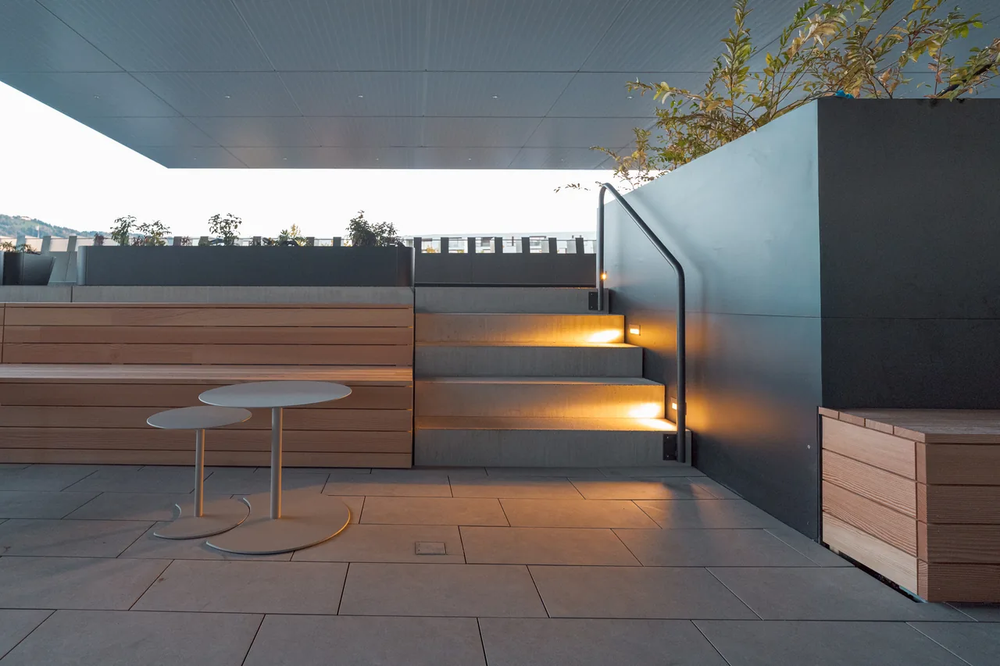
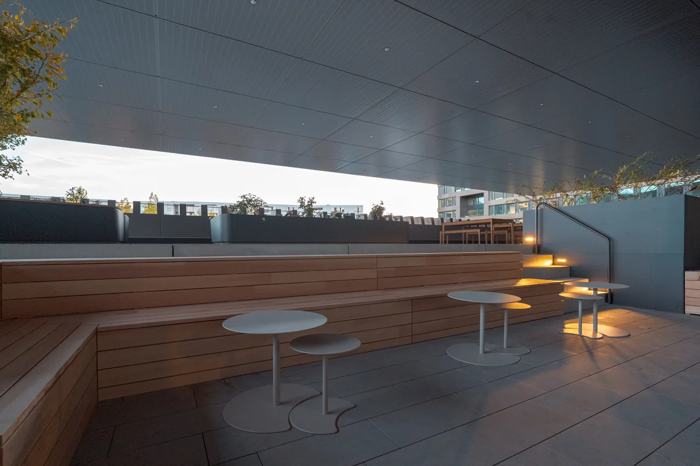
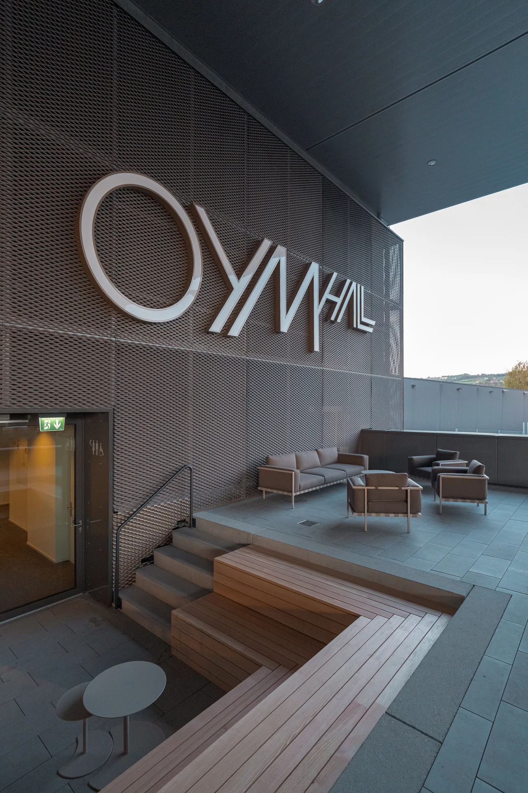
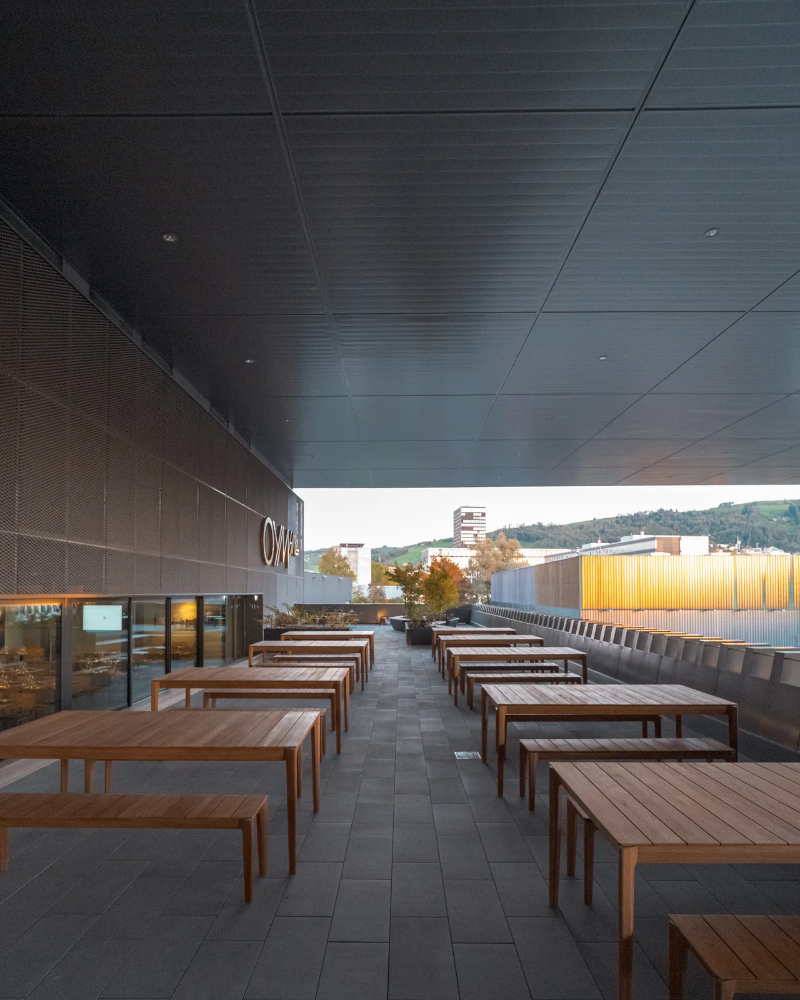

Ein grüner Freiraum über dem Arenaplatz
Die prägnante, vertikal gegliederte Fassade des südlichen Anbaus verleiht der Erweiterung eine eigenständige Präsenz am Arenaplatz. Auf dem Dach des neuen Bauvolumens entsteht unter dem weit auskragenden Arenadach ein geschützter Aussenraum, der die Arena um eine neue Aufenthaltsqualität bereichert.
Benannt nach «Kolin», dem Maskottchen des EVZ, wird «Kolins Garden» zu einer begrünten Dachterrasse und einem vielseitig nutzbaren Begegnungsort. Unterschiedliche Bepflanzungen strukturieren den Freiraum und schaffen eine einladende Atmosphäre. Sitzgruppen für die Aussengastronomie, grosszügige Loungemöbel und Feuerstellen ergänzen das Angebot und laden zum Verweilen ein.
Als räumliche Erweiterung des Restaurants «Tugium» verbindet der Dachgarten Innen- und Aussenraum, steht jedoch sämtlichen Stadionbesuchern offen. Die bewusste Materialwahl aus unbehandeltem Lärchenholz, Sichtbeton und keramischen Platten unterstreicht den natürlichen, zurückhaltenden Charakter der Gestaltung.
So entsteht unter dem schützenden Arenadach eine neue grüne Aufenthaltslandschaft, die Architektur, Gastronomie und Begegnung miteinander verbindet und das Stadionerlebnis um eine besondere räumliche Qualität erweitert.



